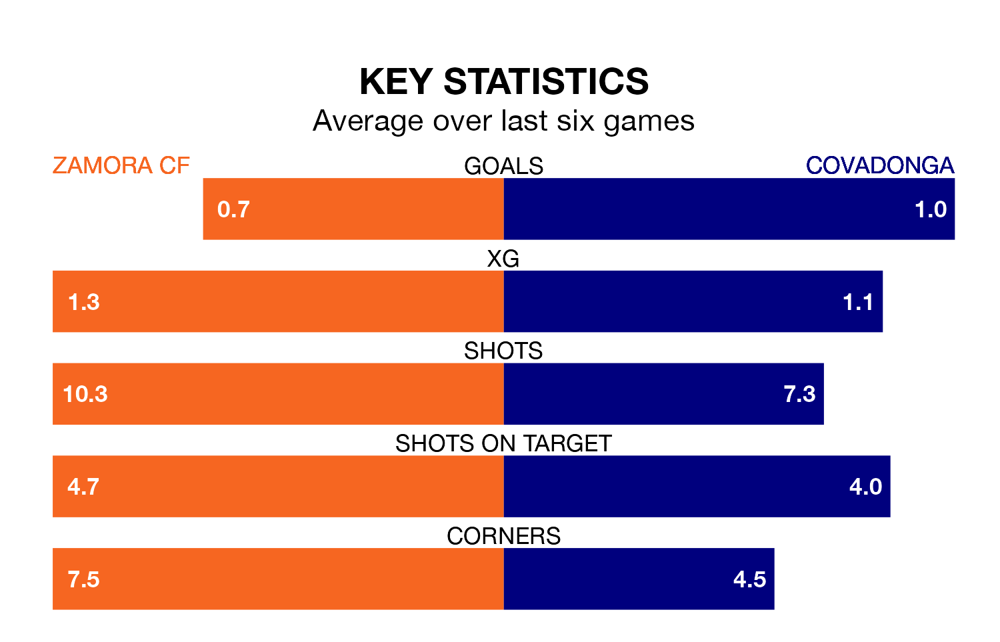

Struggling Covadonga face Zamora CF away at the Estadio Ruta de la Plata on Sunday looking to build on a win in their last league outing.
After securing all three points with a 2-1 victory over Arandina CF on January 14, Covadonga sit 17th in Segunda División RFEF Group 1.
They travel to play a Zamora side third in the standings, who also won their last match, 1-0 against Cayón.
With 17 goals in 18 games so far this season, Covadonga are scoring at below the league average rate with 0.9 goals per game. And they are conceding more than average, letting in 35 goals at a rate of 1.9 per game.
Zamora are also below average scorers, with 1.1 goals per game, compared to a league average of 1.2. They have conceded 0.5 goals per game.
The home team are in mixed form in Segunda División RFEF Group 1, with two wins and three draws from their last six games.
With two wins and two draws over that period, the visitors' form is slightly worse – they have taken eight points from 18, compared to Zamora's nine.
Updated: 13:09 (UTC), 17/01/24